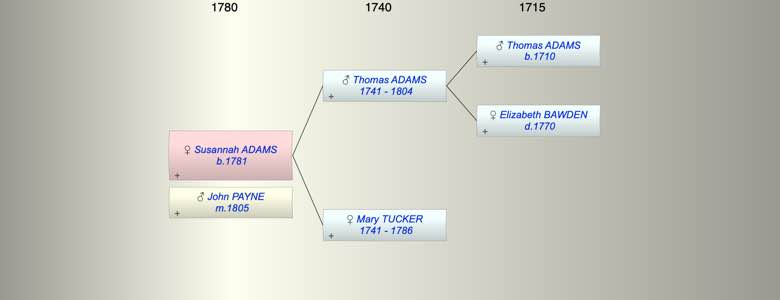

| [Index] |
| Susannah ADAMS (1781 - ) |
|  |
| b. abt 1781 at Heavitree |
| m. 03 Jun 1805 John PAYNE |
| d. Y |
| Near Relatives of Susannah ADAMS (1781 - ) | ||||||
| Relationship | Person | Born | Birth Place | Died | Death Place | Age |
| Grandfather | Thomas ADAMS | abt 1710 | ||||
| Grandmother | Elizabeth BAWDEN | 1770 | ||||
| Father | Thomas ADAMS | abt 1741 | Heavitree | Jan 1804 | Heavitree | 63 |
| Mother | Mary TUCKER | abt 1741 | 1786 | Heavitree | 45 | |
| Self | Susannah ADAMS | abt 1781 | Heavitree | Y | ||
| Husband | John PAYNE | |||||
| Sister | Grace ADAMS | 1767 | Heavitree | |||
| Sister | Elizabeth ADAMS | 1769 | Heavitree | |||
| Sister | Mary ADAMS | 1771 | Heavitree | |||
| Sister | Sarah ADAMS | 1773 | Heavitree | |||
| Sister | Hagar ADAMS | 1775 | Heavitree | |||
| Brother | Thomas ADAMS | 1777 | Heavitree | Y | ||
| Sister | Anna Maria ADAMS | 1781 | Heavitree | 10 Aug 1840 | Heavitree | 59 |
| Nephew | Thomas BREWER | 1801 | Heavitree | 07 Jan 1861 | 60 | |
| Niece | Anna Maria BREWER | 06 Dec 1803 | Heavitree | 1888 | Lambeth | 85 |
| Nephew | William BREWER | 23 Jul 1806 | Heavitree | 23 Aug 1851 | 45 | |
| Nephew | James BREWER | 1807 | Exminster | 11 Apr 1881 | 4 Victoria Cottages, Parr St Exeter | 74 |
| Nephew | John C BREWER | 14 Jul 1811 | Exminster | 1889 | Petersfield | 78 |
| Nephew | Charles BREWER | 18 Mar 1813 | Exminster | 1894 | 81 | |
| Niece | Sarah BREWER | 1815 | Exmouth? | 12 Mar 1852 | Alphington | 37 |
| Niece | Mary BREWER | 1817 | Exminster | 31 Dec 1861 | 44 | |
| Niece | Selina BREWER | 1818 | Exminster | 1899 | 81 | |
| Niece | Charlotte BREWER | 19 Aug 1820 | Exminster | 29 Oct 1883 | 63 | |
| Brother in Law | James HARRIS | |||||
| Brother in Law | John SHAPLEY | |||||
| Brother in Law | Richard WEST | |||||
| Brother in Law | Jacob PAYNE | |||||
| Sister in Law | Elizabeth ADAMS | |||||
| Brother in Law | William BREWER | 1779 | 1827 | Exminster | 48 | |
| Events in Susannah ADAMS (1781 - )'s life | |||||
| Date | Age | Event | Place | Notes | Src |
| abt 1781 | Susannah ADAMS was born | Heavitree | baptised 11 Mar 1781 | ||
| 18 Mar 1784 | 3 | Christening | Heavitree | ||
| 1786 | 5 | Death of mother Mary TUCKER (aged 45) | Heavitree | Note 1 | |
| Jan 1804 | 23 | Death of father Thomas ADAMS (aged 63) | Heavitree | Note 2 | |
| 03 Jun 1805 | 24 | Married John PAYNE | Note 3 | ||
| Created on a Mac™ using iFamily for Mac™ on 15 Sep 2023 |